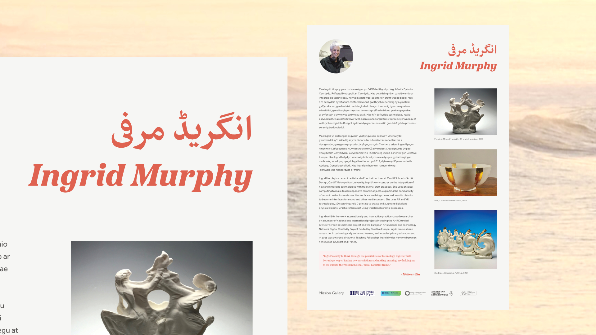
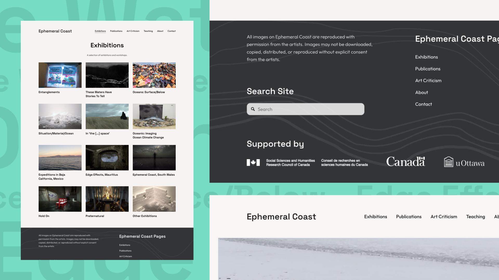
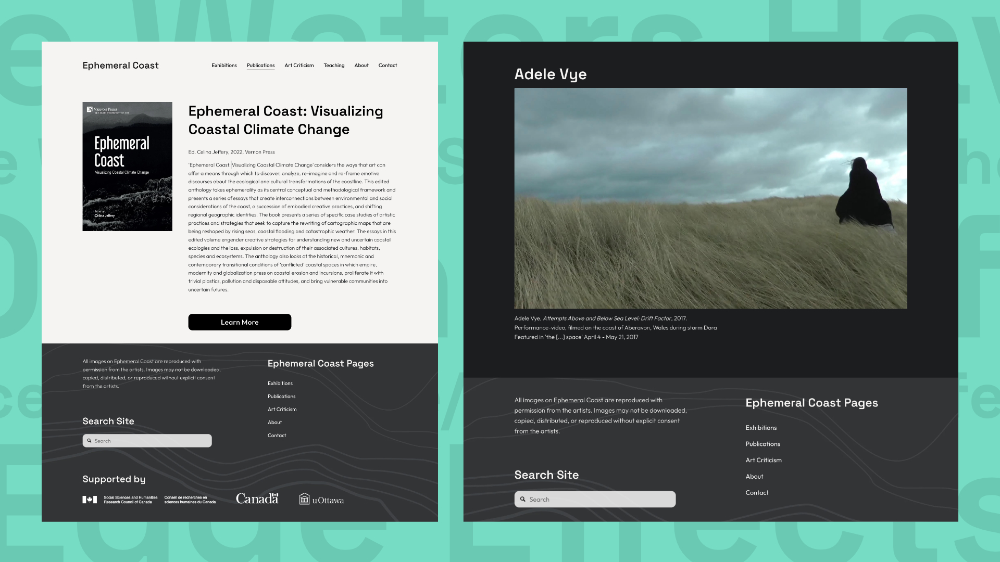
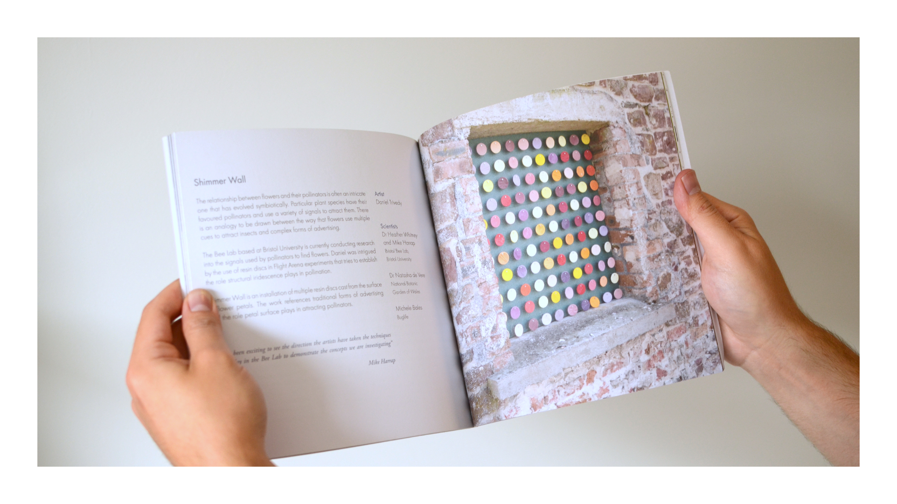
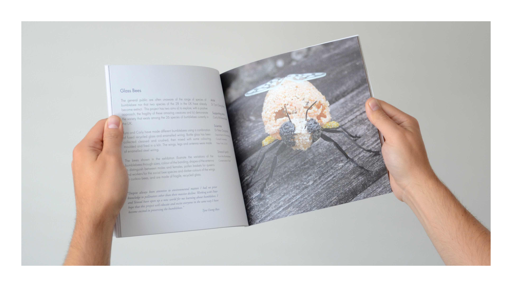
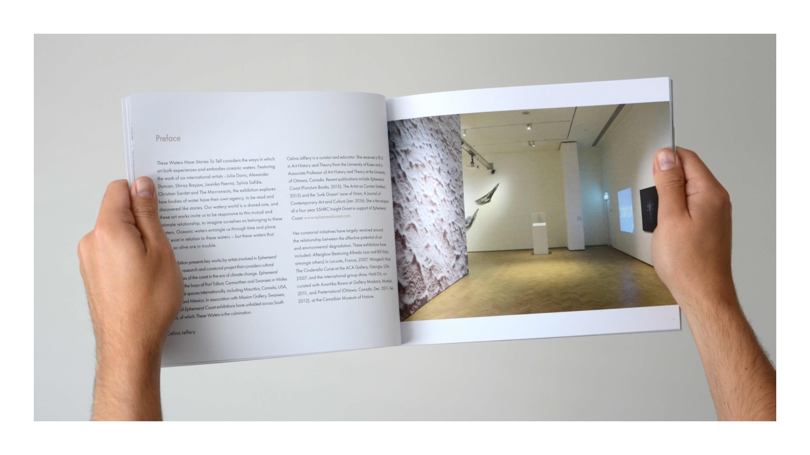
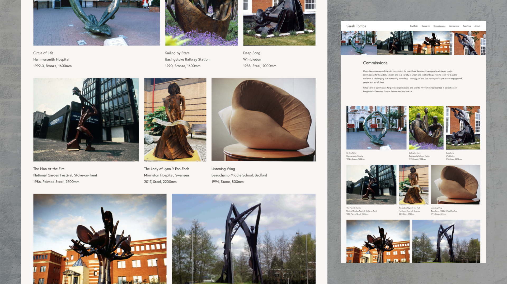

Shwmae - I'm Matthew Otten - an award-winning visual designer specialising in branding, stratergic communication, and UI/UX.
Below are a few selected works from my portfolio - feel free to drop me an email at hi@matthewotten.co.uk or connect with me on LinkedIn.

Branding and Publication Design for Llif / بہاؤ / Flow
-

-

- 
Client: Ceri Jones / Mission Gallery
I designed the visual branding for Llif / بہاؤ / Flow. A Wales/Pakistan art project to celebrate the 75th anniversary of Pakistan. Commissioned by the British Council. The Mission Gallery run project saw 10 visual arts and crafts pracctioners from Pakistan and from Wales creating work through a collbrative cultural exchange.
Craft-inspired identity.The branding drew inspiration from traditional Pakistani and Welsh crafts; with the logo referencing both Pakistani ceramic motifies and Welsh blanket patterns.
Three languages. The typography for this project was a particularlly important as exhibition publications featured all three languages, Urdu, English, and Welsh, in the one design.
Website Design for Ephemeral Coast
-

- 
- 
Client: Celina Jeffery
I redesigned the website for Ephemeral Coast , a curatorial research project by Celina Jeffer that examines the intersections of art, environmental activism, and socio-political issues, exploring how contemporary artistic and curatorial practices engage with ecological crises and social justice.
The redesign focused on accessibility and content discoverability. Content was grouped logically, with a consistent layout and information hierarchy to help users navigate over ten years of content.
A key design consideration was a versatile design system that put content front and centre through the considered use of typography, layout, and colour, whilst remaining flexible enough to accommodate a wide range of imagery across different scales and formats.
Publication Design for Cross-Pollination
-

- 
- 
Client: Prof. Andrea Liggins
I designed the publication for the Cross-Pollination exhibition at the National Botanic Gardens of Wales.
The project, funded by the Arts and Humanities Research Council, brought artists and sciencists together to produce creative works that explored the crisis facing pollinators and influence policy decision-making.
I created a considered and minimal design to account for a wide variety of artwork mediums featured in the brochure, from installations to the written word, to moving image.
Publication Design for These Waters Have Stories To Tell
-

- 
-

Client: Celina Jeffery
I designed the publication for These Waters Have Stories To Tell, an Ephemeral Coast project and exhibition that took place at Glynn Vivian Art Gallery.
The design focused on clean typography and a complementary but subtle colour palette that added emphasis to the artwork.
Alongside the design, I also produced the photography of the exhibition’s artwork in situ, which was included in the publication.
Website Design for Sarah Tombs
-

- 
-

Client: Sarah Tombs
I designed the portfolio website for sculptor Sarah Tombs - with a strong emphasis on content, clarity, and longevity, the site establishes a clear and intuitive structure around the core areas of her practice: sculpture, research, commissions, education, and workshops.
With a body of work spanning over 25 years, Sarah’s website organises projects thematically by material and context. This approach allows users to navigate a substantial archive of work through singular themes, creating a coherent and legible reading of the practice.
The design prioritises content through considered typography, layout, and a restrained colour palette, while remaining flexible enough to accommodate a wide range of imagery across different scales, formats, and time periods.